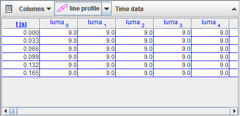

A line profile track is a tool for measuring brightness and rgb data along a line on a video image. If the line width is increased by adding spread, image pixels above and below the line are averaged in order to reduce noise and/or increase sensitivity.

Shift-drag the mouse to mark a line profile. The line is drawn as a narrow rectangle that surrounds the pixel points analyzed by the line profile tool.
Drag either end of the line to change its length. Drag the center of the line to position it.

To increase the number of pixels sampled for a smoother average you can give the line profile a spread. Select the line and enter the desired spread in pixels in the field on the toolbar.
The spread pixels extend to both sides of the line. Thus, for a given data point on the line, the total number of pixels sampled (i.e., width of the line profile) is 1 + 2*spread. The outline of the line profile shows all pixels included in the average.

By default, a line profile has a horizontal orientation--that is, parallel to the top or bottom edge of the video image. Setting an x-axis orientation by selecting the Along X-Axis item in its track menu will instead cause the line to remain parallel to the x-axis. This is useful when measuring spectra that have been inadvertently captured with a tilted camera, for example.


By default, the line profile has a fixed position--that is, its center position and length are the same in all frames. Uncheck the Fixed Position checkbox in its track menu to allow these properties to vary independently from frame to frame.
By default, datatables display line profile data at a single time as a function of the position number along the line, with rows showing different position numbers and columns showing different data types (e.g. x, y, luma, pixels, etc).

When analyzing profile data that varies with time, you can click the Profile data button on the datatable toolbar to change it to Time data. In time data mode, the rows show different times and the columns show a single data type at different position numbers. To select which data type to display, click the Columns button on the datatable toolbar.
